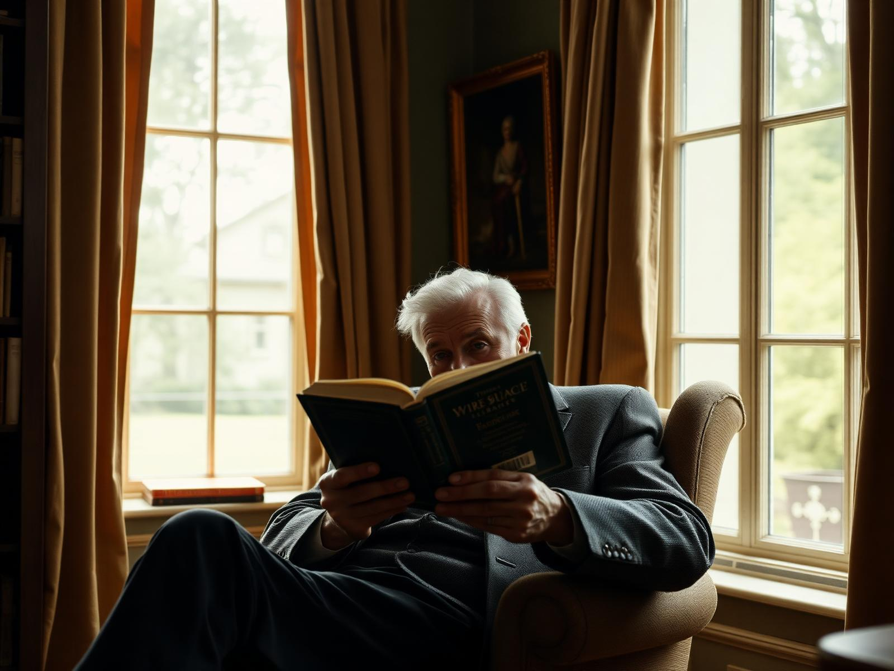

Morning
Waking to warm light,
Waking to warm light,
not a corridor.
South-facing suites, linen curtains, tea brought exactly the way it's liked.
01 / 04
Three ways to move through Divine Care — fixed-background bands, sticky stacking sections, and full-page slides. Scroll to begin.

Every en-suite is designed with soft light, calm materials and personal touches — a place to feel settled from the very first night.
The pace of a day here is set by the people living it. Long breakfasts. Slow walks. Afternoons of watercolour, or the newspaper, or simply nothing at all.

Formal borders, kitchen gardens, quiet benches under old trees. Every home has grounds worth walking — or simply looking out at.
Each one settling gently on top of the last.
South-facing suites, linen curtains, tea brought exactly the way it's liked.
01 / 04

Menus written weekly with residents. Nothing arrives from a heat trolley.
02 / 04

Watercolour classes, garden clubs, quiet chairs by the window.
03 / 04

Clinical care held to the highest standard, delivered so gently you might not notice.
04 / 04
A vertical, snap-to-screen sequence — every scroll settles on the next moment.

The front doors open onto light-filled rooms, familiar warmth, and a team that already knows your name.

Clinical care held to the highest standard, delivered so gently you might not notice it happening at all.
Every question you have deserves a real answer, in person.